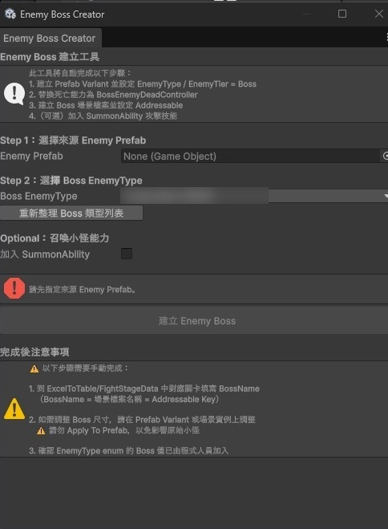

產品經理作品集
Deciii
從營運端發現問題，從工程端理解限制。
現在，我想把中間那一段做好。
我曾擔任一款海外社交型老虎機手遊的主要營運負責人 2 年 8 個月，之後自學轉職成遊戲工程師，至今 4 年多。這兩段經歷讓我站過需求流程的兩端，也讓我確定自己最想做的，是從發現問題、釐清需求，到推動落地的整個過程。
營運行銷企劃
- 從玩家數據發現問題
- 提出方案、預期效果與驗證方式
- 參與上線前驗證
我想做的事
- 把需求寫成邏輯嚴謹的規格
- 定義範圍與優先順序
- 推動上線、追蹤成效
遊戲工程師
- 評估可行性與工時
- 提出替代方案、收斂範圍
- 開發工具，讓使用者驗收
案例一 · 海外社交型老虎機手遊
Co-op 活動機制優化：找出玩家放棄的真正原因
多人合作活動的放棄率偏高
不是時間不夠，而是玩家的進度被其他人卡住
改版後表現變好但未達標，決定降低推出頻率、保留為備用活動
我在流程中的位置：在這份工作中，我負責從數據發現問題、提出方案與驗證方式；正式規格由企劃撰寫，RD 開發，上線前由企劃、QA 和我一起驗證。
問題
第一版的規則是：隊伍裡的玩家各自負責收集不同的字母，湊齊後拼出指定的單字，才能完成活動。上線後，放棄的玩家比例偏高。
分析：先排除最直覺的原因
最直覺的解釋是「活動時間太短」。我持續觀察了一週的參與數據，先排除時間不足的影響，才確認真正的原因：
玩家的進度取決於別人。只要隊伍裡有人離開，其他人就永遠湊不齊字母，再努力也完成不了。
當玩家判斷自己不可能完成時，最合理的選擇就是放棄。
示意：實際活動的單字與分組不同。
真正的需求：保留互動，移除依賴
這個活動的目的是讓玩家多人互動，所以不能直接改成個人活動。要解決的是「一個人離開就讓整隊失敗」的設計，而不是多人合作本身。
方案
第二版改成：每位玩家都可以自己收集任何字母、獨力完成單字；隊友一起參與時，能更快湊齊。合作從「必要條件」變成「加速器」。
結果與決策
第二版的表現比第一版好，但仍然沒有達到理想程度。我決定降低這個活動的推出頻率，把它保留為備用活動。
回頭看
- 第二版上線前，應該先定好「達到多少才算成功」的門檻，讓後續要不要繼續投入的判斷更快、更客觀。
- 多人參與的價值也應該被量化，例如比較多人隊伍和單人的完成率，才知道合作機制本身有沒有發揮作用。
案例二 · 駐點客戶專案 · 休閒手遊
七日任務：一週時程內切出 MVP
要依新手、老手提供不同任務，一週內上線，但規格一直在變
回到需求的目的，把範圍切成「準時上線的核心」和「定義清楚後再做的擴充」
準時上線，擴充部分後來也完成實作
狀況
客戶希望用七日任務提升次日留存和七日留存。原需求是「新手一套任務、老手一套任務」，時程一週。但開發開始後，規格不斷出現破壞性修改，例如新手和老手的定義、任務的跳轉功能。照這樣下去，一週內什麼都完成不了。
我怎麼切範圍
我先問自己：要驗證「每天都有任務，能不能提升留存」，最少需要什麼？
| 內容 | 為什麼這樣分 | |
|---|---|---|
| 核心 準時上線 | 可以控制持續天數的任務系統 | 驗證核心假設只需要這部分 |
| 擴充 之後實作 | 依受眾鎖定任務：參與其中一種就不能參與另一種，直到完成，或過期後的隔日 | 新手、老手怎麼定義？身份轉換後原本的任務要不要並存？規則還有缺口，硬做只會一路返工 |
結果
核心任務系統準時上線；受眾鎖定的擴充，在規則定清楚之後也完成了實作。
如果我是 PM：把這份需求重寫成 PRD
當時我是工程師，只能在開發途中幫忙收斂範圍。所以我從 PM 的角度，把這個需求重寫成完整的 PRD，目標是：如果一開始就這樣寫，那些反覆修改都可以避免。
| 原專案的問題 | PRD 怎麼處理 |
|---|---|
| 新手、老手沒有可計算的定義 | 「啟動日就是註冊日」即為新手，只在開始任務時判定一次 |
| 身份轉換後，任務是否並存 | 同一時間只能有一組任務；身份改變不影響進行中的任務 |
| 跳轉目的地沒有範圍 | 固定目的地清單；新增目的地另外立需求 |
| 時程固定 | 拆成 v1.0／v1.1，Backlog 標示 Must、Should 與時程不夠時的移出順序 |
PRD 另外包含 10 條例外狀況、13 條驗收條件、數據埋點，以及用 A/B 對照組判斷成效的設計。
四個關鍵設計決定
漏掉的天數可以補完成
目標是留存。玩家一旦覺得自己不可能完成，就會放棄，這和案例一看到的現象一樣。上線後用「補完成比例」觀察是否影響每日登入。
PRD §6.1
跳轉目的地用固定清單
跳轉是原專案反覆修改的來源之一。營運可以在清單內自由組合，新的目的地走正常需求流程。
PRD §6.3
已開始的玩家沿用舊版設定
營運隨時可以調整任務內容，但不會改到正在進行的玩家，避免規則中途改變造成混亂與客訴。
PRD §8 E4
身份只在開始時判定一次
新手隔天就變成老手，但進行中的任務不受影響。直接解決「身份轉換後任務要不要並存」的問題。
PRD §10.2
可點擊原型
依 PRD §6.6 的畫面清單製作的灰階低保真原型。畫面上的編號對應說明欄與 PRD 章節。
- 進入任務頁、切到 Day 2，按「開啟公會頁面」的前往：目的地未開放時怎麼處理
- 按三次「玩一局」，把 Day 3 的遊玩任務做完再領取
- 切到「Day 7（最後一天）」：入口改為「即將結束」，Day 4–7 的登入任務一次補完成
任務內容與金額皆為示意。
案例三 · 駐點客戶專案
Mob 轉 Boss 設定工具：讓提出需求的人自己完成
把一般怪物設定成 Boss，企劃和美術每次都要找工程師幫忙
主動規劃 Unity Editor 面板，選好來源與類型後一鍵建立
企劃和美術自己約 30 分鐘內完成，找工程師從約 10 次降到 1 次
數字為本人估計；30 分鐘包含使用者自行檢查設定結果的時間。剩下的 1 次，是請程式在 enum 加入新的 Boss 類型，之後企劃和美術就能在面板上選到它。
為什麼要做
寫好功能，和讓人方便使用，是兩件事。
Mob 轉 Boss 的設定原本只有工程師能完成。企劃和美術每調整一次，就得來回找人；工程師也一直被打斷。功能本身沒問題，問題在於提出需求的人沒辦法自己完成。
來回約 10 次、約 2 天
約 30 分鐘內，找工程師只剩 1 次
設計目標
從一開始就以「提出需求的人能獨立操作、自己驗證無誤」為目標。所以面板不只是把步驟自動化，也要讓使用者能自己檢查設定結果。
面板設計

- 1開頭先說明工具會自動完成哪 4 件事。使用者不必懂內部設定，也知道按下去會發生什麼。
- 2只要依序選兩個欄位：來源怪物和 Boss 類型；召喚小怪能力是選配。
- 3防呆：還沒選來源時，直接說明缺什麼，「建立」按鈕維持不能按。
- 4工具做不到的步驟直接列在面板上，容易出錯的地方特別標示，例如「勿 Apply To Prefab，以免改到原本的小怪」。
驗證與交付
- 自己先完整測試
- 請美術和企劃實際操作
- 依他們的回饋調整介面與操作流程
- 確認他們能獨立完成後，才正式交付
同樣的思路，也用在其他地方
Google Docs 劇本轉換工具 前一份工程職
編劇習慣用完整文件寫劇情，原本寫完後還要把每個行為拆成遊戲指令，排在正確的位置。我沒有要求編劇改用表格，而是做了轉換工具，讓他們照原本的習慣寫。
測試流程優化 駐點客戶專案
測試人員常因為不熟專案而反覆詢問操作方式。我提出「非專案成員也能獨立執行」的原則，請各測試負責人補上操作說明與教學連結，獲團隊採用。
營運行銷企劃 · 2019–2021
LiveOps 方法與營運決策
我負責一款海外社交型老虎機手遊的年度活動規劃、每週數據報告與每月檢討。以下是我做營運判斷的方法，以及幾個具體的決定。
方法
以「月」配置活動組合
每個月安排高、中、低不同強度的活動，各自負責改善不同的指標。強度有兩層：獎勵與參與誘因的強弱，以及要營造多熱鬧的節慶氛圍。每年 9 月排出下一年度，再檢查整年的配置與跨月影響。
依活動週期選擇指標
每天追蹤營收、付費人數、付費率與 ARPPU。單日活動看當日付費人數與轉換率；週活動看玩家的投入程度，以及資源消耗與報酬是否符合設計。需要比較方案時，會開 A/B Test。
分層設計活動經濟
週活動依付費層級分眾。先估算每一層玩家完成任務需要的時間與遊戲幣，預估資源會在哪個階段用完，提前安排小額補給，讓玩家能持續投入。
活動短期調整，商城長期穩定
商城定價會影響玩家對遊戲幣價值的信任，所以日常用活動做滾動調整；只有在數據確認方向之後，才系統性地調整商城。
決策
節慶活動提前開跑歸因有限
商城金幣重新配置歸因有限
西語聊天室：評估後不拆
先人工驗證，再投入開發
Sidekick 角色生日活動
競品分析 與同事合作
關於我
經歷與技能
- 2024 – 至今軟體服務公司 資深軟體工程師（駐點客戶專案）
- 2023 – 2024小型遊戲團隊 遊戲工程師
- 2022 – 2023數位行銷公司 遊戲工程師
- 2019 – 2021海外社交博弈手遊公司 營運行銷企劃
- 2014 – 2017國立臺中科技大學 國際貿易暨經營系
產品
需求分析、範圍與優先順序、PRD 撰寫、流程與狀態設計、競品分析
數據
MySQL、Redash、Kibana、Firebase、Google Analytics、A/B Test
技術
Unity / C#、Node.js、Python、Git、Postman
製作方式：案例與每個產品決策都來自我的經驗；文字整理、網頁與互動原型使用 Claude 協助製作。